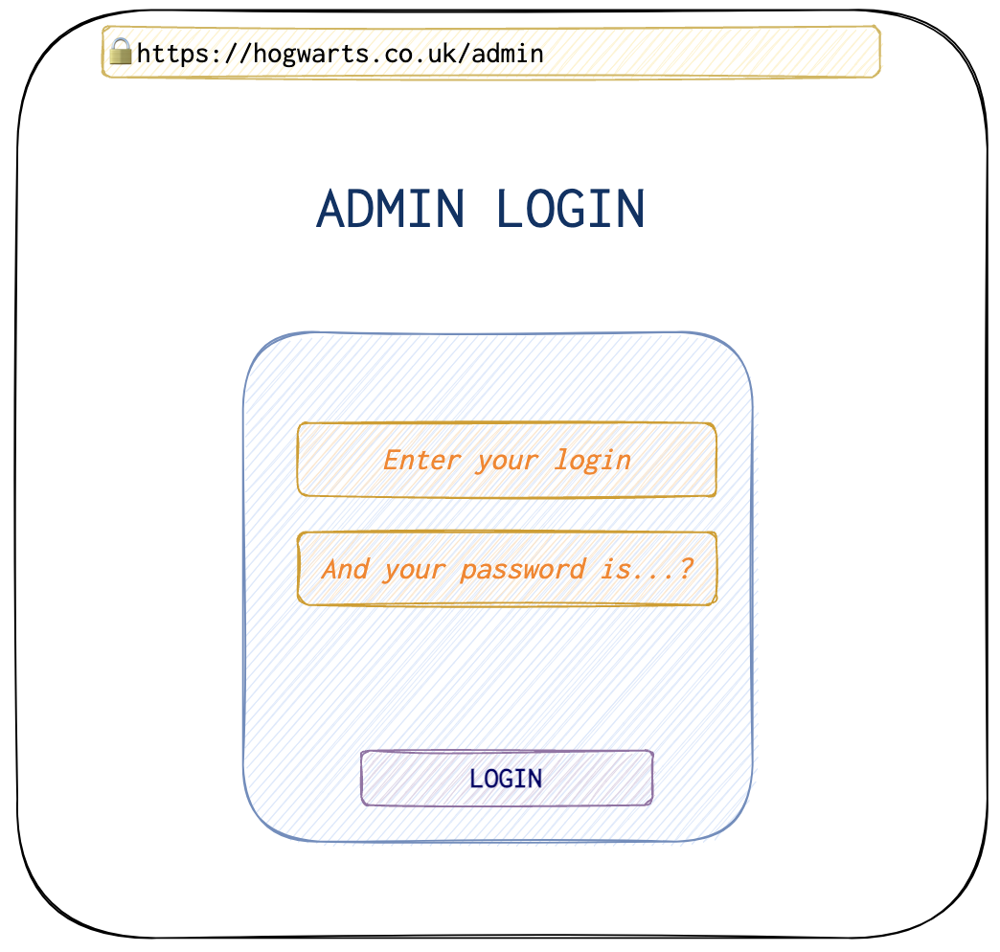
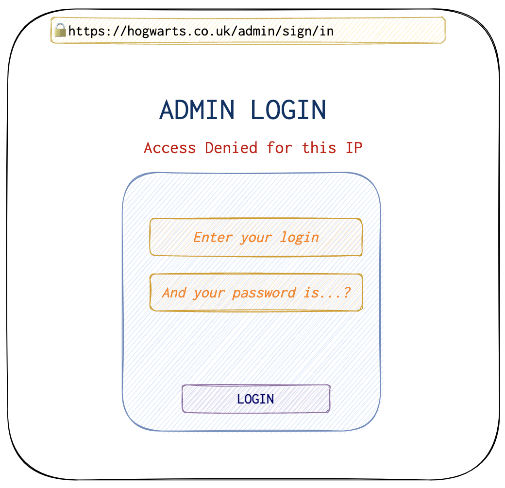
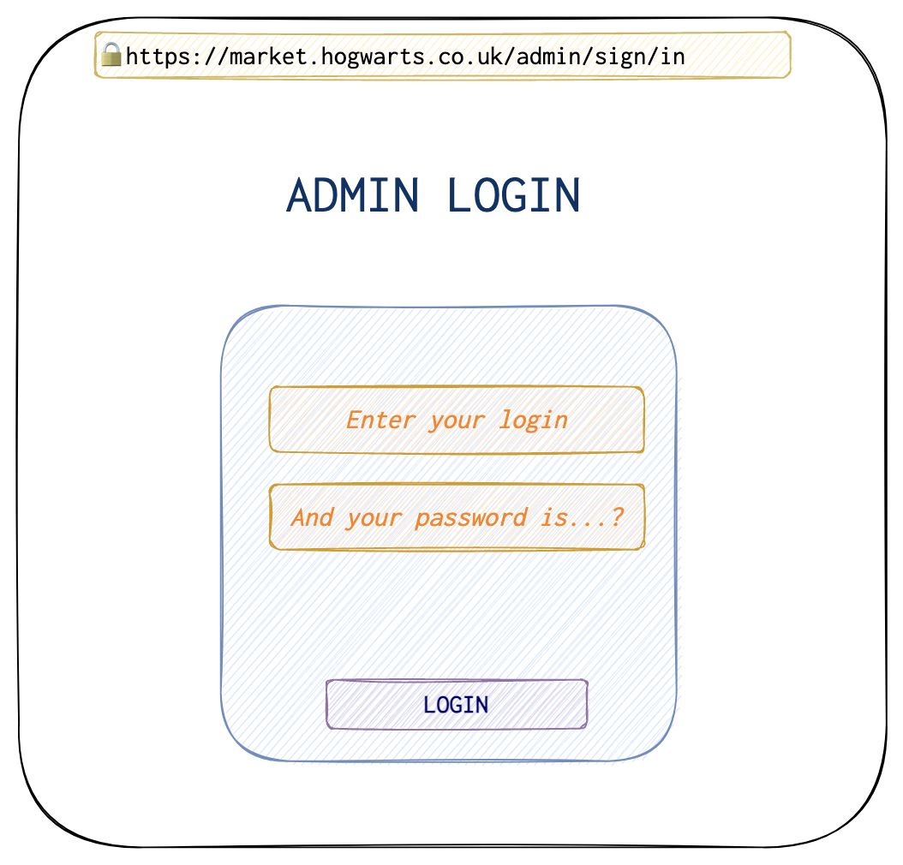
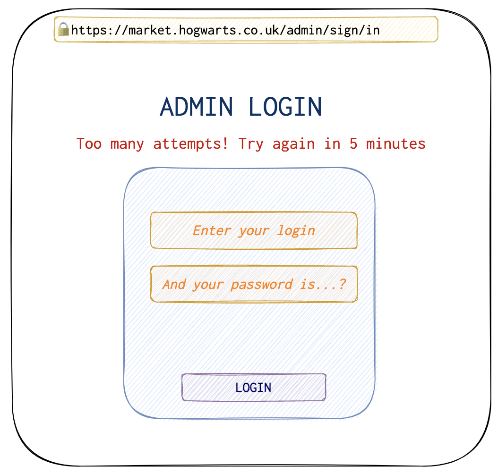

Hey, ps! Would like you to hear a fairy tale? I am sure that you do! It all happened not long long time ago and not in a galaxy far far away… . Let’s imagine that in the J.Rowling’s universe there were cybersecurity specialists as well and Hogwarts had a real website in the Internet. Funky idea! 💡
A very hard-working girl, let’s call her Rachel (yeah, Rachel 😉) was sitting at her table, working as usual when she suddenly saw her phone vibrating nearby. She picked up the phone, hoping that wasn’t a spam. Indeed it wasn’t. That was her colleague, asking if she is interested in a little side project.
‘- What sort of project is that? - the girl wondered.
‘- A very easy one, near to boring. Some magic school has become covered with certain compliance issues and wanted to check their online business card. I am sure there is nothing big there. I’ve checked, not even a login page or some payment on the website, - he replied.
‘- It doesn’t sound motivating, man. But ok. I am not overwhelmed with any work at the moment, - Rachel said, clicking on a red cross in the upper left corner of her browser, closing some online Sniper Rabbit game 🐰 🔫. - Let’s give it a shot. May be they will be interested in something bigger later on!
Considering this oportunity an investment into her client network, Rachel tried to force herself with all her strength sit down, smile and admire the process. It was hard, but she has tought herself to work even when the things she did were not inspiring. After all, work, as well as life in general, is not all the candies and dances.
‘- Ok, - she said, - What does this website even look like?
The website was not looking very simple though. There were indeed no login pages anywhere to be seen, but there were lot’s of pages nevertheless. You can sometimes find gems inside JS code, or some commented lines in HTML. So, if there are a lot of pages, there is still quite an amount of work to do.
As she usually did and what’s become the part of her daily routine thus almoust unconsciously, she opened Burp Suite Pro and redirected the browser requests through this intercepting proxy tool. Running several plugins like Backslash, Active Scanner, crawler was also almoust a habbit. Almoust unconsciously she launched dirb tool to see some directories or files accessible from the Internet. Not much hope there, but still. Who knows?
After several hours of clicking and scrolling, and looking through the frontend source code, she decided to check what might have been snared in her “fishing net” 🎣.
‘- Looks like there are not many things to enumerate let alone bruteforce. Indeed this might be a little boring… .

Rachel felt that her eyes needed a little relaxation and went to the kitchen to make herself a cup of tea. She liked tea a lot. No, she was not English 🏴, but tea was her biggest addiction. She could not spend a single day without it. Besides, when the time was right, it might even have a blend of seducing and spurring effect.
Rachel took a couple of biscuits 🍪🍪, the cup 🍵 and her motivation and got back to her work place.
‘- Fine, fine fine…, - she kept saying when she was trying to find at least something, at least slighlty more serious than an ordinary “Information leak through error messages”. It’s often like that. It’s a common misconception that is putting too much pressure on people like Rachel. If you don’t find bugs, people don’t believe there are none of them, rather that you were not working hard enough.
And that’s when it started happening…. Sometimes, there is this hunch that one needs to follow. It’s comming from deep inside, our subconscious might find something worthy even before consciousness sees it. Jung called it intuition. It’s really a powerfull thing that’s needed so much in the work such as Rachel’s. And that’s the story where several hunched helped.
‘- Ok, - Racheled murmured under her nose, - What if I check the requests and responses manually in Burp? The website is very small, there should not be too many requests there.
That was a fair shot, because indeed, the Burp logs were not extensive at all. She was scrolling down the requests and responses when suddenly something caught her eye 👁.
' - OMG! Is this a password or something? - she wondered. Indeed it was! - But I don’t remember entering anything… Wait, a password in the response? What’s going on?
HTTP/2 200 OK
Content-Type: application/json; charset=UTF-8
Server: nginx
Content-Length: 174
Connection: close
X-Powered-By: PHP 7
{
"success": true,
"url": "http://smski.co.co.uk/send_message?login=Hogwarts&password=Bnh175Lkajnfnf9&from=Hogwarts&to=4409877890&text=OTPis123456"
}
‘- Noway this could work! - she exclaimed. However, she copied the URL and pressed Enter. And she saw the SMSki website. As a quick research revealed, it was used to send SMS messages in large quantities. There was also what looked like a login form in the corner. She typed Hogwarts as login and Bnh175Lkajnfnf9 as password and… got inside the Hogwarts’ personal profile on this website. She was bewildered.
‘- Oh my gosh… . That’s a littly out of scope. I don’t want to get myself into trouble. But I have to check it thoroughly. What can I do? Can I send messages? Read them? Do I need some additional authorisation to do so?
Long story short, no, she didn’t. The website was surprisingly primitive in terms of security and looked like the one from the earliest days of the Web. She had figured this out when she saw the login request sent via GET. Cool! 😎
✍️ GET requests have several “features” that’s why they are not a wise choice when it comes to confidential information.
There is something weird as well, that might have caugth your eye, my dear listener/reader. The text parameter of this GET request. What do you think this OTPis123456 might mean?
Rachel saw this text and was shoked even more. She needed to know, which request did this response belonged to. After several minutes of checking and retrying she could confirm that this was triggered by phone number confirmation on this website. Looked like if someone needed a brochure which could reveal some information about the school and lurl people to them, they had to enter a valid phone number. May be they were too overloaded with this brochure requests and the magic wands 🪄 could not get too helpful there.
As a part of this verification process, Hogwarts website sent a SMS message to the user with a temp code in it. However, this was done via the user’s browser. User receives this JSON thingy, client’s browser uses the website’s JS code and this URL with parameters to actually login to smski and send themselves an OTP generated prior on the server. How do you like such a procedure?
‘- Ok, that’s a bug for sure. And not a good one. I should probably inform them right away and not wait until the report is prepared, - Rachel thought.
It was very hard to explain the problem to the non-muggles, but she did it and assured them there might actually be a problem later (of not already).
Rachel thought that there could be nothing of value other than here. She tried this and that, harassing this poor form as much as she cood staying withing the legal boundaries. In several hours she could confirm that there is definetely no low or medium hanging fruit 🍉 there, and it’s time let it go and move forward.
She opened the dirb results (directories and files enumeration) with a little hope to see something of value when a very juicy string has caugth her eye… and HTTP response code was 200! So, there was some admin page exposed to the wild. That’s great! She immediately opened the URL and saw a login page.

The first thing probably any attacker either real or ethical would do - type admin in the both fields. But as usually results in the same result: Access Denied ⛔️. But in this case followed by “…for this IP”.

‘- What if I try to turn on the VPN in the browser, - was a valid assumption, - And this…this…. wait for it… doesn’t work. Damn. I don’t understand, how do they check my IP? Is it an HTTP header like X-Forwarded-From or something?
Rachel checked the HTTP headers of the request in Burp.
GET /admin/sign/in
Host: hogwarts.co.uk
Connection: close
...
‘- Don’t see anything of that sort. That’s so weird… . - Rachel double-checked the request but got the same results. She even checked whether there is a Referer header that might be giving her out, but there wasn’t. It started getting dark outside and she had already missed her chance to savour the last rays of the sun 🌞. There was no point rushing out now. She decided to postpone the investigation of this picky behaviour for later and check the Burp’s automated scan results. Nothing severe, high or even medium was found. But…
‘- Wait, what is that? - Rachel noticed that https://hogwarts.co.uk was not the only domain used by the website. Some pages belonged to the https://market.hogwarts.co.uk. It seemed that the crawler followed several links that lead to that domain or may be she clicked on those links herself. She checked the URLs for the subdomain and it turned out, that that was a page listing magic services provided to the muggles.
‘- Here is a crazy thought… Does this subdomain has the admin page as well? - Rachel wondered typing https://market.hogwarts.co.uk/admin/sign/in in the address bar and pressing Enter.
‘- Ha! - Rachel exclaimed outloud in a guine excitement and surprise. - Look! This page is accessible on this domain as well! Great. What if I try to enter a password?

Rachel typed the usual admin/admin that probably would make any site sigh of boredom 😑 should they be alive. This time she didn’t get access to the admin page, however, there was no “IP denied” message this time! Just an ordinary “Wrong password”. She tried several other passwords from the most common passwords list and this time she stumbled upon the “Wait for 5 minutes” 🕣 message.

Ok, - thought Rachel. - I will try in 5 minutes. If I don’t get the correct password then, I will probably get a 10 min timeout. So, I need to choose wisely.
She scrolled down the list of the most common passwords, trying to put a score to the most likely options. Then, she had her list of the next 5 options to try. When the 5 minute timeout was over, she tried all of them. But what a surprise it was to get … a 5 minute timeout again!
‘- Ha, that’s going to make things easier, - Rachel thought 💭 to herself.
Burp’s Intruder didn’t have an option to send 5 requests every 5 minutes, so she felt a need to write a custom script in Python.
# importing the requered librariess
import requests
import time
import warnings
import sys
warnings.filterwarnings("ignore")
delay_coeff = 1
url = "https://market.hogwarts.ru/admin/sign/in"
# headers required for the POST request to the admin URL
hdrs = {
"Host": "market.hogwarts.ru",
"Connection": "close",
"Content-Length": "162",
"Origin": "https://market.hogwarts.ru",
}
passwords = open("/Users/rachelgreen/projects/hogwarts/oracle_passwords.txt", 'r')
attempts = 1
for line in passwords.readlines():
print("====================================")
print("This is an attempt \033[1;33;40m #" + str(attempts))
username = line.split(":")[0].strip()
password = line.split(":")[1].strip()
# after each 5th password entered, sleep for 310 seconds
if attempts % 5 == 0:
time.sleep(310*delay_coeff)
# min content length without the password and login fields
content_len = 148
post_data = {
"LoginForm[username]" : username,
"LoginForm[password]" : password
}
# add the size of the password and login to the Content Type
added_length = len(password) + len(username)
content_len += added_length
# update the Content-Length header
hdrs["Content-Length"] = str(content_len)
# send the request
response = requests.post(url, post_data, headers=hdrs, verify=False)
# In case she gets a "Too many attempts error", she will have to extend the delay before the next 5 passwords are sent
if "Too many" in response.text:
print("\033[1;35;40m The delay coefficient is too small")
delay_coeff += 0.5 # increment the coefficient in order to extend the sleep time
time.sleep(60*6) # wait for 6 minutes just to be sure
elif "Incorrect username or password." in response.text:
print("\033[1;31;40m The username {} or password {} is wrong!".format(username, password))
# Since there are only two types of messages possible that Rachel has discovered, anything else can potentially be a success and will need to reviewed EVEN if it is not.
else:
print("\033[1;32;40m Success! The login is: {}, and the password is: {}".format(username, password))
# if something looks different from the above messages, that could be either a success or some other error that could give some insight into what's the password could be. That's why she's breaking the loop.
break
attempts += 1
Rachel looked from the window outside and the warm motherly breath of the spring gently petted her cheek. She took a deep breath, her lungs 🫁 filled with fresh evening air and she felt some dizziness and composure raising inside.
‘- I think, I need a short randevouz in the park, - she said to herself. - The list of passwords is huge and I don’t have any reason to rush. Besides, it could do me good, would reload my brain 🧠. I am sure I will sleep like a dog 🐕.
The lights went off, the door slammed behind her and the little MacBook and the python script went on in Alliance, on and on, until the last if clause broke the loop… . But what was it? Admin page? What were the login and password?
Rachel got back home 15 minutes 🕒 later after the script had terminated. An almoust endless row of red “The username {} or password {} is wrong!" was diluted with a modest green success message. Rachel managed to get her mind off the project completely this evening and that is why she didn’t notice.
The next morning Rachel started with a cup of green tea and a croissant. She was dreaming of a cupcake though. The croissant was old and dry, it was obvious that its best time was over, it had become just food. When she finished her breakfast, she remembered, that she forgot about the script running.
‘- OMG! I hope, I have not broken anything! - she exclaimed and rushed to the laptop. - Could it be… really? Success? What was the password? Em… Wait, what?
She had been staring at the screen for several minutes. It did not make any sense. Both the login and password were <BLANK> (litterally). It seemed that in the list of passwords there were lots of this <BLANK>s either for a login or password or both. Of course, it was intended that the <BLANK> is actually an empty string. But how are you going to put it in the document and keep the structure? She tried to use the above mentioned credentials to login and indeed, did not receive neither “Too many attempts”, nor “The password or login is wrong”. Instead, a blank page with a website header was there. No errors, but not an admin page either.
Rachel decided to remove the <BLANK>-<BLANK> credentials from the list and pressed the button, running the script once again. She decided to watch it work indtead this time, she still had her tea 🫖 and had a couple of hours to spare.
‘- Aha… Another success. Is it success this time? - she wondered. This time the credentials were User and <BLANK>. This time as well she got the same result. Then, out of the blue, coming from somewhere deep inside her shrewd subconscious, was this quite whisper: Try admin and <BLANK> together. And she tried. And it worked.
‘- I don’t understand, this doesn’t make any sense. Who in their right mind would set a password to <BLANK>? What kind of perversion is that? Somewhere between drinking coffee with sugar and drinking tea without it?
She tried several other logins with the <BLANK> password and got the same result as before with an empty page. She then tried admin with <BLANK> again and was again redirected to the login panel. And then she felt this whisper again: Try using <BLANK instead. Who knows?
‘- OMG, this also works!!! - it was hard to keep the emotions inside. She started deleting characters from the end and kept getting the same results as before. A frivolous admin page was there again, heartily welcoming anyone even distantly familiar. At some point, Rachel was left with just a < which also worked fine. > on the other hand was not satisfying for the system.
‘- Is it like a bookmark or a backdoor in the code? - Rachel didn’t see any other possible reasons other rather than similar to code below:
...
if (login == "admin" and password[0] == "<") or (login == "admin" and password == "somerealpass":
return adminpage
else:
print("Incorrect username or password."
...
She informed the client right away and out of pure curiosity asked for a code snippet that was responsible for authentication. Turned out that there indeed was something like the one above, some fired developer saught its final revenge. He could have uploaded a webshell using this admin control panel! May be he had… But that, dear readers, is whole other scope… .